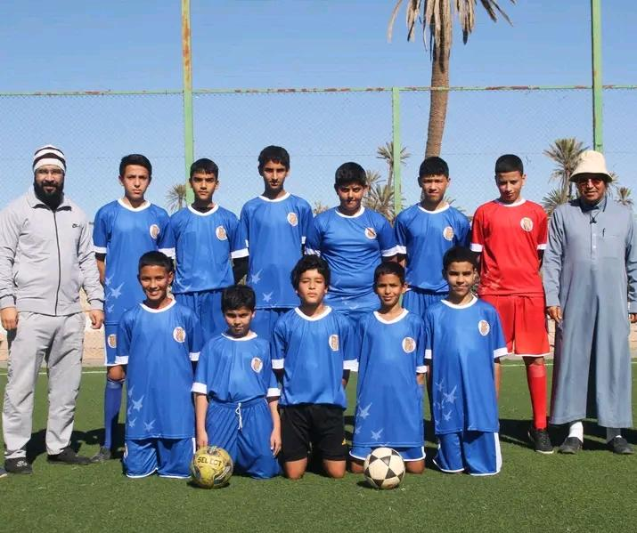
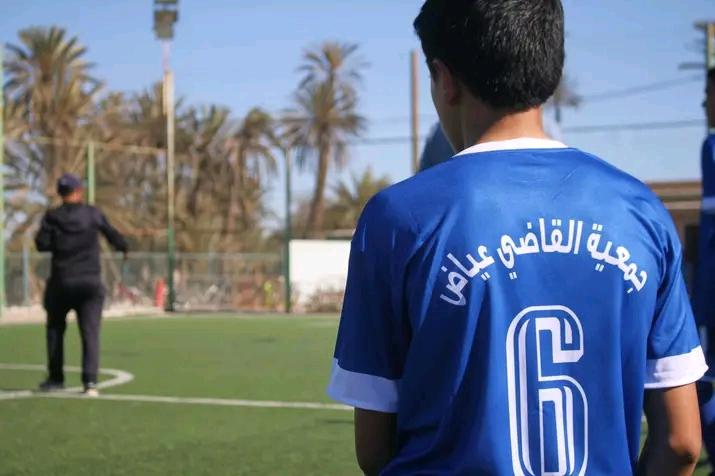

ع
زائرجمعية قاضي عياض⌄جمعية قاضي عياض
كرة القدم
تجمعنا
تابع أخبار الجمعية ومبارياتها ولاعبيها من مكان واحد.
ستظهر التفاصيل بعد اعتمادها وإضافتها من الإدارة.
البيانات الرسمية تظهر بعد ربط الموقع وتحديثها.
ق
مرر لاستكشاف الصفحات ↓
الموسم الحالي
المباريات والنتائج
تظهر النتائج والمواعيد المنشورة للجميع.
⚽لا توجد نتائج منشورةستظهر هنا بعد إضافتها واعتمادها.
من الميدان
صور من الجمعية
لقطات من فريق الجمعية وقميصه الرياضي.

